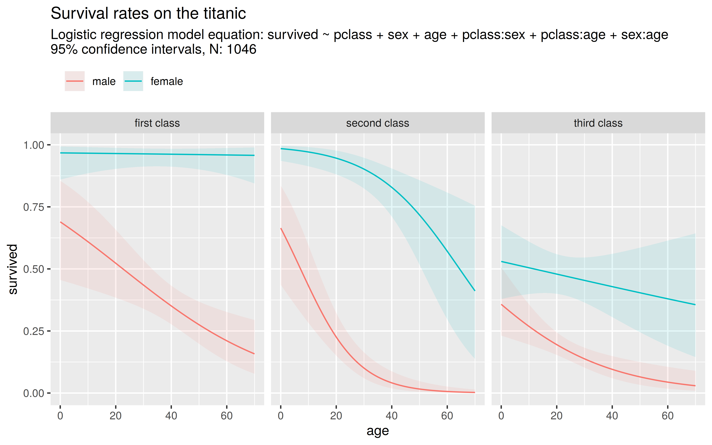

introduction-to-r
File - New Project... and select New directoryintroduction-to-r and create it as a sub-directory of your Desktop folderdata and source in the project’s root folder.data folder.getwd() into the console window. This prints out the full path of your projects root folder.
list.files("./data") into the console window. What’s the meaning of the dot . in the file path?list.files("../")?helloWorld.R)File - New File - R Script or use the plus button in the toolbar.plot(rnorm(100)) into the text-editorRun button in the toolbar.rnorm.mean, sd and rnorm?mean in the console to call the help page for this functionFile - Save) in the source folder of your project. Give it the name helloWorld.R.kvb.R from the course website and save it in the project’s source folder.Install the missing packages XML and leaflet with the function install.packages
install.packages(c("XML", "leaflet"))clusterOptions = markerClusterOptions() at the right place).Perform the following calcuations using the R console:
Advanced: \(\sqrt{2}^2 - 2 = 0\), right?
sqrt(2)^2 - 2 not exactly equal to zero?rnorm.
rnorm(n = 10)
rnorm(10, 2, 4)
rnorm(mean = 2)
rnorm(sd = 3, mean = 1, n = 3)TRUE and "TRUE"? Whats the difference between pi and "pi"?as.numeric() to cast values to a numeric type:
TRUE and FALSE?"hi" to a numeric value? Try the same with the string "5".pi
rm() function with the appropriate argument.Use the c() function to store the results from the calculations in exercise 1.4 in a vector . Assign the vector to a variable with the name values.
ls() function to list all user variables in the global envrionment.
ls()?descriptive.Rsource folder under the name descriptive.Rx
# define some arbitrary numeric vector with varying length e.g.
x <- c(1, 4, 2, 9)
# calculate the statisticsmax(), min(), length() and sum()c(), rep() and seq():
rep()):
Have a look at the two vectors:
x <- c("TRUE", "FALSE", "TRUE", "TRUE")
y <- c("2", "4", "5")Execute the following expressions in R and explain the result.
as.numeric(as.logical(x))
is.numeric(y)
is.character(x)
is.logical(as.character(TRUE))Try to guess the result of the following expressions without using a computer
is.logical(0)
is.logical(as.logical(0))
is.numeric(as.logical(x))
as.character(1243)Have a look at the two values x and y and the vector a and b
x <- 9^2
y <- "test"
a <- c(4, 6, 5, 7, 10, 9)
b <- c(4, 6, 2, 7, 2, 3)Execute the following expressions in R and try to explain the result
(4 < 5) & (sqrt(x) == 9)
y == "Test" | y == "test"
x < 100 | y != "hallo"
a > 5 & b < 7
all(a > 4 | b < 6)
any(a < 2)
length(a) == length(b)Try to guess the result of the following expressions without using a computer
a < 4 & b > a
a == length(b)
any(sqrt(x) == a)
all(a < b)
length(x)sum() and mean() function to it. What do you observe?rnorm(), sample \(n = 100\) values from the normal distribution. Count the relative and absolute number of observations which are
pnorm() for some random normal variable with \(X \sim N(\mu_x,\sigma_x)\). E.g. calculate the probabilities:
is.na() on your vector to test for missing values. What is the return type of the function is.na()?sum() function together with is.na() to count the number of missing values in the vector.descriptive.R.
x contains missing values?mean(), sum(), …)..csv dataOpen the titanic dataset with a text editor (e.g. right click on the file - edit with notepad++)
source and give it the name titanic.R.read.csv() function with the correct file path, to import the titanic dataset into R (Remember to also include the argument stringsAsFactors = FALSE).summary() or the head() function for this.programmatically:
age contain?With the titanic dataset and the function table() answer the following questions:
In addition, use the functions prop.table() to transform the tables into relative frequency tables:
isMale to the dataset which is TRUE if the passenger is male.survived column from numeric to logical.isChild to the dataset which is TRUE if age < 18 and FALSE else. Are missing values preserved?TRUE if the name contains the string "Miss" and FALSE else.
grepl()Use the function chisq.test to check if there is a significant relationship between the class and the survival rate of a personen.
table function to create a contingency table.read.csv2() function. Why do you have to use read.csv2() instead of read.csv()?FIFA World Cup are included in the dataset?countMissings()Write a function countMissings which accepts a numeric vector x as input argument and returns the number of missing values NA in the vector.
Use this template as a start:
countMissings <- function(x){
# calculate nMissings here
# return the number of missing values
return(nMissings)
}age variable from the titanic dataset.Advanced: If the vector contains only missing values, a warning should be printed to the console. Use the function warning() and an if construct for this.
descriptive.R into a functionWrap your code from descriptive.R into a function with the name descriptive(). The function accepts a numeric vector x as input argument, calculates the descriptive statistics and returns them in a named vector. Use this template as a start:
descriptive <- function(x){
# calculate the descriptive statistics for x here
# return the result
return(result) # result should be a named vector containing the descritpive statistics
}Tip: You can create a named vector like this:
result <- c(mean = 0.4, sd = 4, range = 2)descriptive() to the survived and pclass column from the titanic dataset.age variable which contains missing values. Think of ways to correctly handle missing values (e.g. you could add an additional argument removeNA to your function)Advanced: If the type of the vector x is not numeric, the function should terminate with an error (look at the function stop()).
sapply() functionsapply() with the countMissings() function from exercise \(4.1\) to count the number of missing values in each column of the titanic dataset.What’s wrong with the following lines of code? Rewrite the function mySum such that it can be used without errors.
mySum <- function(a){# calculates the sum of two numbers a and b
return(a+b)
}
mySum(4)
b <- 6
mySum(2)Look at the following code:
norm <- function(x){# calculates the eucledian norm of a vector
xNorm <- sqrt(sum(x^2))
return(xNorm)
}
x <- c(1, 2, 1)
x <- norm(x)
xNorm
xnorm()?x after the code terminates?normalize()normalize() which standardizes a numeric vector x such that \[
x_{norm} = \frac{x-\bar{x}}{x_{sd}}
\]
warnings() should be printed to the console.numeric (e.g. it contains logical values), the function should be terminating with an error. Use the function stop() and is.numeric().normalize such that the user can pass two parameters mand s with \[
x_{norm} = \frac{x-m}{s}
\]
normalize(x). You can achieve this by using default arguments.Look at the two vectors:
x <- c(2, 3, 4, 4)
y <- c(TRUE, FALSE, FALSE, TRUE)Without using a computer: What’s the result of the following expressions?
sum(x[y])
sum(x[!y])
sum(y[x])
sum(y[-x])
# advanced
which(x > 3)
which(x[y] > 3)How can you remove missing values from a vector? Write a function removeNA() which takes some numeric vector x as input and returns the vector with missing values removed.
x (e.g. use the function is.na together with extraction method [])xClean containing the subset of x with the missing values removedxCleanA call of this function should look like this:
x <- c(2, 3, NA, 4)
removeNA(x)[1] 2 3 4Write a function negToZero() which sets negative numbers in a vector x to \(0\). A call of this function should look like this:
x <- c(-10, 3, -2, 3, 4)
negToZero(x)[1] 0 3 0 3 4Write a function codeToNA() which converts some user defined numbers in a vector x into NAs.
%in% operator to update the values inside the vector x.%in% operator works, have a look at this example: 1:10 %in% c(1,3,5,9)A call of this function looks like this:
x <- c(2, 3, -99, -999, NA, 4)
codeToNA(x, c(-99, -999))[1] 2 3 NA NA NA 4Write a function removeOutliers() which identifies positive outliers in a numeric vector x.
A call of this function looks like this:
x <- c(2, 3, 120,1.5, 2, 1, 0, 999)
removeOutliers(x)[1] 2.0 3.0 120.0 1.5 2.0 1.0 0.0detectOutliers which gives the indices of the outliers in a vector. Are there any outliers in the age column of the titanic dataset?ageImputed to the dataset which contains the age of the passenger but with NAs replaced by the overall average age (see Mean imputation).Miss in their name (comare with exercise 3.4)?t.test to perform a two sample t-test and check wether the difference in the mean age between Misses and all other passengers is significant.Choose a visualization from the examples on the slides and complete the plot, e.g.
…
Use the matrix function and create the following matrics \[
A=
\begin{pmatrix}
2 & 4 \\
1 & 6 \\
\end{pmatrix}
, B =
\begin{pmatrix}
1 & 3 & 9\\
8 & 2 & 4\\
\end{pmatrix}
, C =
\begin{pmatrix}
TRUE & TRUE & FALSE\\
TRUE & FALSE & TRUE\\
\end{pmatrix}
\] Calculate
myTTest which tests, if the mean of two given numeric vectors x and y is statistically different from one another (see here for a detailed explanation)
x, y and a significance level alphaqnorm())t.testwarning())Write a function myRegression which performs a multivariate linear regression analysis given some outcome y and some design matrix X. The model is given by the equation: \[
y = X\beta + \epsilon,~ \epsilon \sim N(0, \sigma^2)
\] The function should calculate the following statistics:
The results should be returned using a named list. Check your calculations using the built-in function lm.
Advanced: Enhance the function with a t-test for the coefficients and calculate p-values and confidence intervals
Tip: R can do matrix arithmetic such as addition, multiplication and inversion: Have a look at help("%*%") and ?solve
Use the titanic dataset and the examples from to slides:
survived ~ ageImputed. Is the age significant (ageImputed was calculated in exercise 5.7)?pclass and the sex as independent variables. Is the age now significant?embarked variable. Are there any significant effects?predict.lm function to predict the probability of survival for each passenger. Compare the predicitons to the real outcome. How good is the fit?predict.lm() function with the newdata argument.Try to squeeze out some information from the name column in the titanic dataset:
embarked and pclass - identify family members.Tip: Install the stringr package, load it with library(stringr) and have a look at the various functions having the naming convention: str_<action>() (e.g. str_replace(), str_detect()).
Use the ggplot2 package, the glm() function and the titanic dataset to model and visualize survival rates on the titanic. Use a logistic regression model with the independent variables age, pclass and sex and the dependent variable survived.
The final figure could look like this (A script to produce this figures can be found in the scripts section):

A guidance on how to proceed:
titanic dataset and use the function as.factor() to transform the pclass and the sex variable into the factor datatype.glm function with the formula: survived ~ pclass + sex + age + pclass:sex + pclass:age + sex:age and the family = "binomial" argument.
: in the formula, interaction effects can be specifiedfamily = "binomial" one can specify a logistic regression modelsummary() function to the model object and try to interpretate the coefficients. Why is it important to transform the pclass variable to the factor datatype befor applying the model?age, sex and pclass
expand.grid() function, create a new data.frame filled with “artifical” passenger data: for each possible outcome of sex and pclass you should vary the age from \(0-70\).sex, pclass and age).predict() on the model object and the new data to predict the survival rates.data.frame containing the new passenger data.ggplot() function to plot the passenger data
ggplot() with the aes() function. Use the asthetics x, y and color.geom_line()facet_grid(~pclass) to create three separate plotsggtitle()predict() function can return standard errors for the predictionsgeom_ribbon() function adds an interval arround the trend lines. Use the additional asthetics ymin for the lower confidence bound, ymax for the upper confidence bound and fill for the transparent fill color.